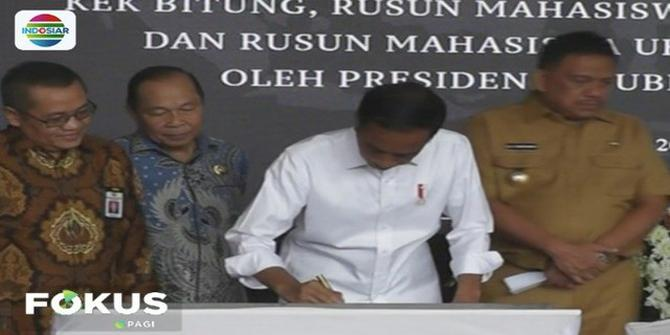

Seusai meresmikan Pabrik V PT. Pupuk Kaltim, di Bontang, Presiden Joko Widodo (Jokowi) didampingi Ibu Negara Iriana dan sejumlah menteri meresmikan peletakan batu pertama atau groundbreaking proyek-proyek strategis Kalimantan Timur, yang dipusatkan di Kawasan Industri Buluminung, Kabupaten Penajam Paser Utara, Kamis (19/11) sore. Dalam sambutannya Presiden Jokowi mengaku senang sekali hari ini bisa melakukan groundbreaking proyek-proyek infrastruktur yang akan dibangun di Kalimantan Timur. Tapi ia mengingatkan, yang namanya sudah groundbreaking itu harus segera proyeknya dimulai. Saya pastikan, 3-4 bulan lagi pasti akan saya cek. Kalau bekerja dengan saya jangan hanya groundbreakang-groundbreaking. Pasti akan saya cek, kata Presiden Jokowi. Presiden memberi contoh, jalan tol Sumatera, ia sudah cek ke sana tiga kali dalam setahun. Sampai mana, sudah berapa kilo, sudah dicor atau belum. Adapun yang di Kalimantan Timur, menurut Presiden, ia sudah diberitahu oleh Gubernur, kalau pembangunan tol yang di Balikpapan – Samarinda, sudah tiga tahun berhenti. Saya kirim Menteri PU-Pera (Pekerjaan Umum dan Perumahan Rakyat) untuk mengecek, berhenti karena apa. Saya sudah mikir, pasti lahan. Ternyata benar, ada problem lahan. Ya sudah diselesaikan, saya beri waktu. Dan alhamdulillah, segera bisa dilanjutkan, semoga nanti kebut-kebutan dengan di Sumatera. Di sini ada tol, di sana ada tol, ungkap Jokowi. Kereta api juga sama. Menurut Presiden, nanti di Kalimantan juga ada kereta api, Sulawesi ada kereta api, di Papua juga ada kereta api. Presiden menyebutkan, ia sempat disuruh groundbreaking kereta api di Sulawesi namun ia menolak, karena ia hanya mau kalau relnya sudah minimal 3-4 km. Saya sudah dilapori kemarin, sudah lebih dari 5 km. Berarti minggu depan saya datang, ujarnya. Presiden Jokowi menegaskan, ia tidak mau kebanyakan groundbreaking, hanya di-groundbreakang-groundbreaking. Untuk itu, Presiden mengingatkan hati-hati karena proyek yang ia baca terlalu banyak sekali. Saya pastikan akan saya cek satu persatu. Jangan saya hanya disuruh mengucapkan groundbreaking tetapi tidak dimulai, hati-hati yang bertanggungjawab. Baik menterinya, gubernurnya, maupun bupatinya, tutur Presiden Jokowi. Menurut Presiden, begitu ia mengucapkan, ia pasti akan kontrol, pasti akan cek. Dan tidak hanya satu kali kata-kata cek. Saya akan cek, saya akan cek, saya akan cek, saya akan cek lagi. Saya pastikan itu, tegasnya. Proyek-proyek strategis Kalimantan Timur yang diresmikan groundbreaking-nya oleh Presiden Jokowi di Kabupaten Penajam Paser Utara itu adalah: 1. Kereta Api Borneo; 2. Kawasan industri Buluminung (10 Technopark): 3. Pelabuhan Buluminung; 4. Jalan tol Balikpapan-Samarinda: dan 5. Jembatan Pulau Balang. Read more: https://setkab.go.id/resmikan-proyek-strategis-kaltim-presiden-jokowi-segera-mulai-jangan-hanya-digroundbreaking/. Download Apps Detikcom Sekarang https://apps.detik.com/detik/
Sumber: detik.com